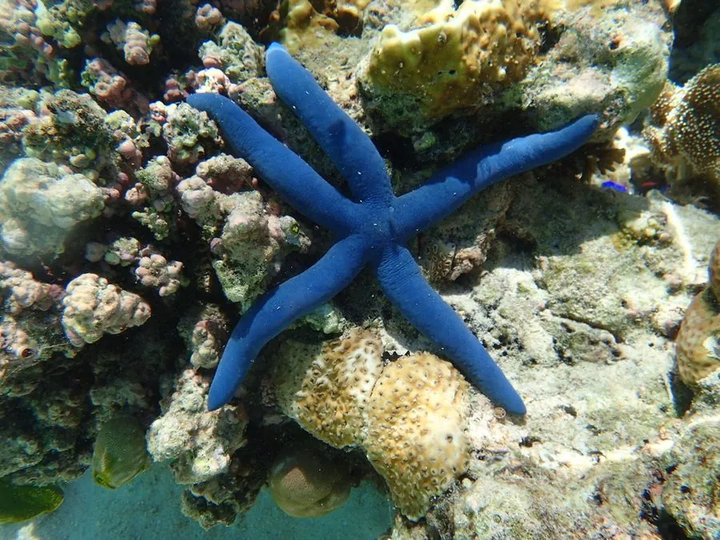

其他无脊椎动物 · 动物界
蓝指海星 Linckia laevigata

通体亮蓝色的常见五腕海星，分布于印度—太平洋珊瑚礁，是热带海域最醒目的海星之一，再生能力强。
- 分类
- 门棘皮动物门纲海星纲目瓣棘目科蛇海星科属指海星属
- 栖息环境
- 热带珊瑚礁的沙底、礁石间和海草床
- 地理分布
- 红海、印度洋和西太平洋珊瑚礁，包括中国南海
- 保护级别
- 暂无评估；受水族贸易和珊瑚礁退化影响
物种志
蓝指海星通常有 5 条圆柱形的腕，五腕展开直径约 15–30 cm，体表光滑，颜色呈鲜艳的亮蓝色，个别个体带橙黄或紫色斑纹，在珊瑚礁的沙底和礁石间非常显眼。
它生活在印度—太平洋的珊瑚礁区，从浅水礁坪到较深海域都能见到，取食藻类、有机碎屑和小型无脊椎动物。蓝指海星的再生能力很强，腕断裂后可以重新长出，某些断裂的腕甚至能发育成新个体。它分布于红海、印度洋和西太平洋，包括中国南海，是热带珊瑚礁生态中的常见海星。由于颜色鲜艳，它也常出现在水族贸易中，采集和珊瑚礁退化对其种群有一定影响，在珊瑚礁保护区里，它们通常更容易见到。
形态与习性
- 食性取食藻类、有机碎屑和小型无脊椎动物
- 体型五腕展开直径约 15–30 cm
- 体色通体亮蓝色，个别带橙黄或紫斑
- 再生腕断裂后可再生，部分断腕能长成新个体
- 分布红海、印度洋和西太平洋珊瑚礁
- 威胁水族贸易采集和珊瑚礁退化
趣味知识
- 蓝指海星的蓝色非常纯正，在海底沙地上像一颗蓝宝石。
- 它断掉的腕可以重新长出，部分断腕甚至能长成新海星。
- 蓝指海星是热带珊瑚礁中最容易被认出的海星之一。